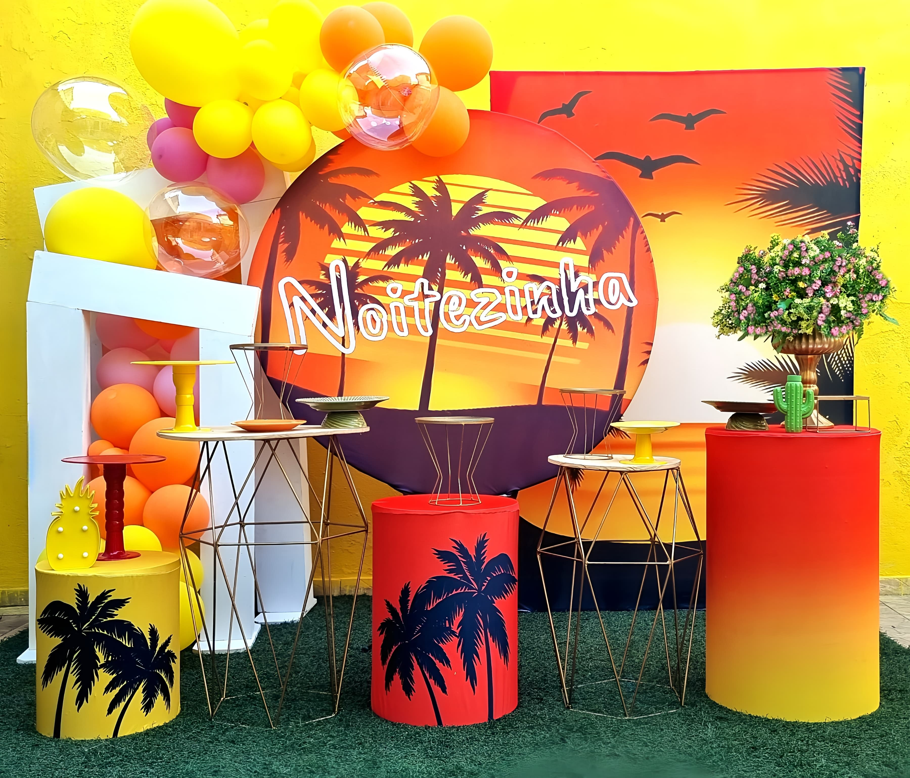

Nossas Decorações:
Happy Birthday: modelo preto

Na imagem de decoração de aniversário, as cores predominantes são:
- Preto: Proporciona uma sensação de sofisticação e elegância.
- Dourado: Adiciona um toque de luxo e festividade.
- Transparente: Utilizado em balões para criar um efeito visual interessante e moderno.
Nesta decoração, não há vasos tradicionais, mas existem elementos decorativos que servem como suportes:
- Stands de acrílico transparentes com detalhes metálicos dourados e pretos: Utilizados para segurar arranjos
florais secos.
- Tapete de crochê branco: Cobre o chão, adicionando um toque acolhedor e elegante.
Esta decoração é ideal para:
- Festas de adultos: A combinação de preto e dourado cria uma atmosfera elegante e sofisticada, perfeita para
aniversários de adultos.
- Eventos elegantes e contemporâneos: A utilização de elementos modernos, como o acrílico transparente e as
cores metálicas, atrai um público que busca uma decoração visualmente impactante e refinada.
Esta decoração é ideal para:
- Festas de adultos: A combinação de preto e dourado cria uma atmosfera elegante e sofisticada, perfeita para
aniversários de adultos.
- Eventos elegantes e contemporâneos: A utilização de elementos modernos, como o acrílico transparente e as
cores metálicas, atrai um público que busca uma decoração visualmente impactante e refinada.
Happy Birthday: modelo branco

As cores presentes em festas podem variar dependendo do tema, mas algumas cores comuns incluem:
- Azul: Representa tranquilidade e confiança.
- Dourado: Simboliza riqueza e sucesso.
- Branco: Simboliza pureza e simplicidade.
Os vasos utilizados em festas podem variar conforme o estilo e o tema da decoração:
- Vasos de cerâmica: São clássicos e podem ser usados para arranjos de flores
- Vasos de vidro: Dão um toque mais moderno e elegante.
- Vasos de plástico: São práticos e ideais para eventos temporários.
Esta decoração é ideal para:
- Festas de adultos: A combinação de preto e dourado cria uma atmosfera elegante e sofisticada, perfeita para
aniversários de adultos.
- Eventos elegantes e contemporâneos: A utilização de elementos modernos, como o acrílico transparente e as
cores metálicas, atrai um público que busca uma decoração visualmente impactante e refinada.
Happy Birthday: Prata

Na imagem de decoração de aniversário que você compartilhou, as cores predominantes são:
- Prata metálico: Representa modernidade e elegância.
- Branco: Confere um toque de simplicidade e pureza.
- Transparente: Utilizado nos balões e nos stands, cria um efeito visual interessante e moderno.
Na imagem, não são utilizados vasos tradicionais, mas existem elementos decorativos que cumprem a função de
suporte para a decoração:
- Stands de acrílico transparentes: Variedade de alturas, usados para criar níveis diferentes e adicionar
interesse visual.
- Bolas de espelho (disco balls): Espalhadas pelo chão, adicionam um toque festivo e glamoroso.
Este tema de decoração é mais adequado para:
- Festas de adultos: A combinação de cores metálicas e elementos modernos cria uma atmosfera sofisticada e
elegante, ideal para aniversários de adultos.
- Eventos modernos e elegantes: A decoração com elementos reflexivos e metálicos é perfeita para quem busca um
ambiente contemporâneo e visualmente impactante.
Leão Rosa

Na imagem de decoração da festa, as cores predominantes são:
- Rosa: Representa carinho, amor e diversão.
- Verde: Proporciona uma sensação de frescor e renovação.
- Roxo: Adiciona um toque de sofisticação e mistério.
Nesta decoração, não há vasos tradicionais, mas existem elementos decorativos que servem como suportes:
- Suportes de acrílico transparentes: Utilizados para segurar pequenos suportes de bolos ou recipientes de
cores pastel.
- Estrutura em arco de balões: Formada por balões coloridos, criando um efeito visual alegre e festivo.
Esta decoração é ideal para:
- Festas infantis: As cores vibrantes e a presença de balões criam um ambiente divertido e acolhedor para
crianças.
- Festas temáticas: Pode ser usada em eventos que celebram a coragem e a força, como aniversários ou festas
motivacionais, devido à mensagem inspiradora no banner.
Milena

Na imagem de decoração da festa, as cores predominantes são:
- Rosa: Representa doçura e alegria, perfeito para uma festa infantil.
- Laranja: Adiciona um toque de energia e diversão.
- Branco: Cria um contraste suave, equilibrando a paleta de cores.
Nesta decoração, não há vasos tradicionais, mas há elementos decorativos importantes:
- Balões: Balões de várias cores (principalmente rosa e laranja) formam parte essencial da decoração.
- Recortes de personagens: Grandes recortes do personagem principal são usados como destaque.
- Arranjos florais: Pequenos arranjos de flores em vasos brancos ajudam a complementar a decoração e adicionar
um toque natural.
Esta decoração é ideal para:
- Festas infantis: A combinação de cores vibrantes e a presença de personagens de desenhos animados tornam
esta decoração perfeita para aniversários de crianças, especialmente fãs da "Turma da Mônica".
- Festas temáticas de personagens: Ideal para festas onde o personagem da Mônica é o tema principal,
capturando a atenção e imaginação das crianças.
Noitezinha

Na imagem de decoração da festa com tema tropical, as cores predominantes são:
- Amarelo: Representa alegria e energia, e está presente nos balões.
- Laranja: Adiciona um toque de diversão e vivacidade.
- Rosa: Proporciona um contraste suave e acolhedor.
Nesta decoração, não há vasos tradicionais, mas há vários elementos decorativos importantes:
- Balões: Em tons de amarelo, laranja e rosa, organizados em clusters para criar uma atmosfera festiva.
- Decorações temáticas: Incluem um pequeno cacto e uma decoração em formato de abacaxi, que realçam o tema
tropical.
- Placas decorativas: Cilindros decorados com silhuetas de palmeiras e outras estampas tropicais.
Esta decoração é ideal para:
- Festas temáticas tropicais: Perfeitas para eventos ao ar livre ou festas de verão, criando um ambiente
alegre e descontraído.
- Festas de aniversário: Adequadas tanto para crianças quanto para adultos que gostam de um toque tropical e
divertido.
- Eventos de confraternização: A decoração vibrante e acolhedora é ideal para reuniões familiares ou
celebrações entre amigos.
Chá de bebê

Na decoração apresentada na imagem, as cores predominantes são:
- Bege: Proporciona uma sensação de calma e aconchego.
- Branco: Confere um toque de pureza e simplicidade.
- Dourado: Adiciona um toque de elegância e sofisticação.
Nesta decoração, há alguns elementos decorativos:
- Vasos com flores secas: Adicionam um toque natural e rústico.
- Stands de acrílico transparentes: Utilizados para exibir itens decorativos de maneira elegante e moderna.
Esta decoração é ideal para:
- Chás de bebê: A combinação de cores suaves e elementos acolhedores é perfeita para celebrar a chegada de um
novo bebê.
- Reuniões familiares: O ambiente acolhedor e amigável é perfeito para celebrações em família.
Patrulha Canina

Na imagem de decoração da festa com o tema "Patrulha Canina", as cores predominantes são:
- Vermelho: Transmite energia e diversão.
- Amarelo: Representa alegria e brilho.
- Azul: Proporciona uma sensação de tranquilidade e confiança.
- Verde: Adiciona um toque de natureza e frescor
Nesta decoração, não há vasos tradicionais, mas há vários elementos decorativos:
- Recortes grandes dos personagens: Utilizados como destaque principal na decoração.
- Arranjos de balões: Combinando as cores vermelho, amarelo, azul e verde, organizados em formas e arcos para
criar um ambiente festivo e atraente.
- Stands temáticos: Com elementos e figuras da série "Patrulha Canina".
Esta decoração é ideal para:
- Festas infantis: Especialmente para crianças fãs da série "Patrulha Canina". As cores vibrantes e os
personagens divertidos são perfeitos para criar um ambiente alegre e envolvente.
Dorama

Na imagem de decoração com o tema "dorama", as cores predominantes são:
- Rosa: Representa doçura e romance.
- Roxo: Adiciona um toque de mistério e sofisticação.
Nesta decoração, não há vasos tradicionais, mas há vários elementos decorativos:
- Balões: Nas cores rosa e roxo, criando um ambiente festivo e colorido.
- Stands cilíndricos: Decorados com textos e ilustrações que remetem ao tema dorama, usados para exibir itens
decorativos.
- Placas redondas com texto: Enfatizando frases relacionadas a doramas, adicionando um toque pessoal e
temático à decoração.
Esta decoração é ideal para:
- Fãs de doramas: Especialmente aqueles que são apaixonados por séries coreanas e querem uma festa que reflita
sua paixão.
- Adolescentes e jovens adultos: Que são o público principal dos doramas e que apreciam uma decoração colorida
e temática.
- Festas temáticas: Perfeitas para aniversários ou eventos que celebrem o amor por doramas e cultura coreana.
Chá de bebê 2

Na imagem de decoração de chá de bebê, as cores predominantes são:
- Verde: Representa crescimento e renovação, trazendo uma sensação de natureza.
- Roxo: Adiciona um toque de sofisticação e mistério.
- Dourado: Proporciona uma sensação de luxo e celebração.
Nesta decoração, há elementos decorativos significativos:
- Balões: Em verde, roxo e dourado, criando uma combinação festiva e harmoniosa.
- Cilindros decorativos: Em verde e roxo, utilizados para exibir pratos e stands de bolos.
- Mesa branca com alças douradas: Usada para segurar pratos e suportes de bolos, além de um vaso com flores
cor de rosa.
Esta decoração é ideal para:
- Chás de bebê: A combinação de cores suaves e alegres é perfeita para celebrar a chegada de um bebê.
- Eventos familiares: O ambiente acolhedor e festivo é ideal para reuniões familiares e celebrações íntimas.
Bolofofos

Na imagem de decoração da festa de aniversário, as cores predominantes são:
- Pastéis: Tons suaves de rosa, azul, amarelo e verde, criando um ambiente alegre e delicado.
- Arco-íris: Um arco-íris vibrante serve como um fundo colorido, adicionando um toque de magia à decoração.
Nesta decoração, não há vasos tradicionais, mas há vários elementos decorativos:
- Balões: Em tons pastéis, usados para criar uma atmosfera festiva.
- Personagens de desenhos animados: Animais com olhos grandes e expressivos são destacados como principais
elementos decorativos.
Esta decoração é ideal para:
- Festas de primeiro aniversário: A combinação de cores suaves e elementos infantis é perfeita para comemorar
o primeiro ano de uma criança.
- Festas infantis: As cores pastel e os personagens de desenhos animados criam um ambiente divertido e
acolhedor para crianças pequenas.
- Eventos familiares: A decoração é amigável e encantadora, ideal para celebrações em família.